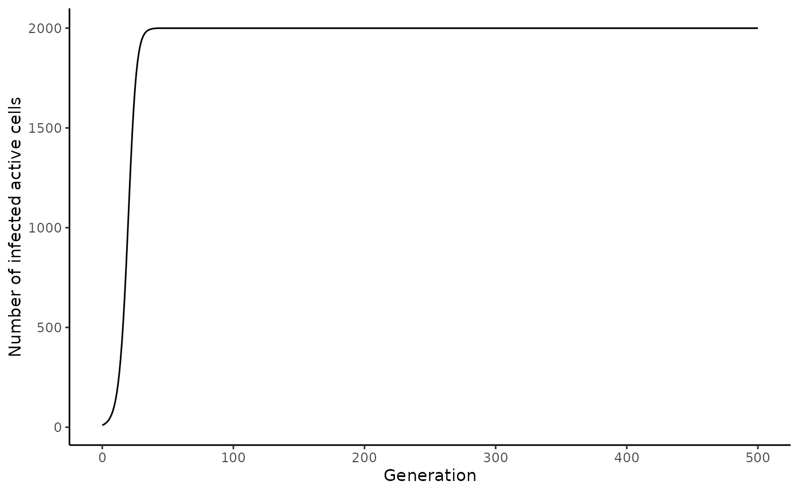
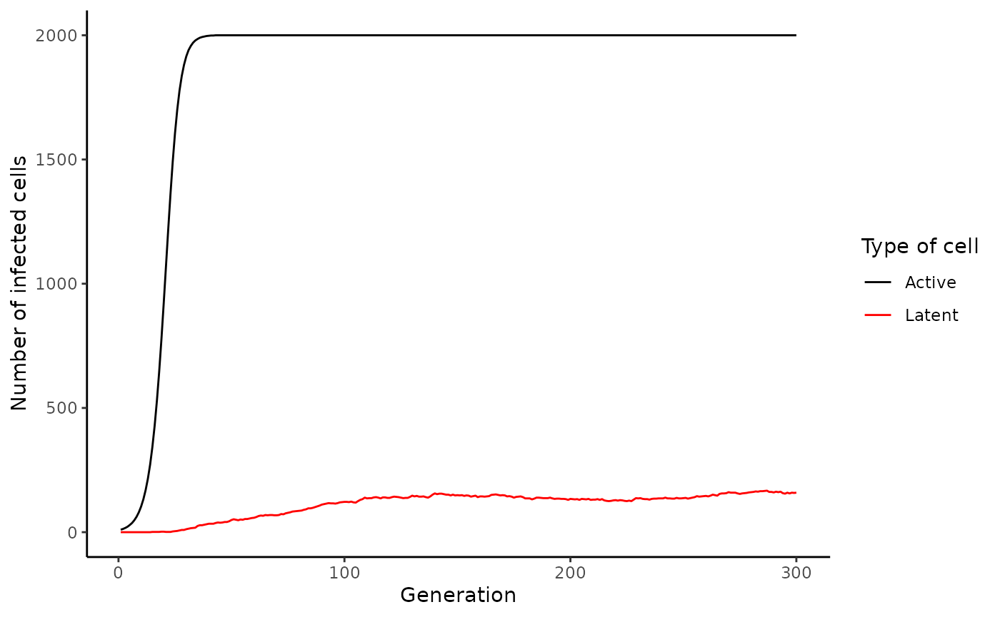
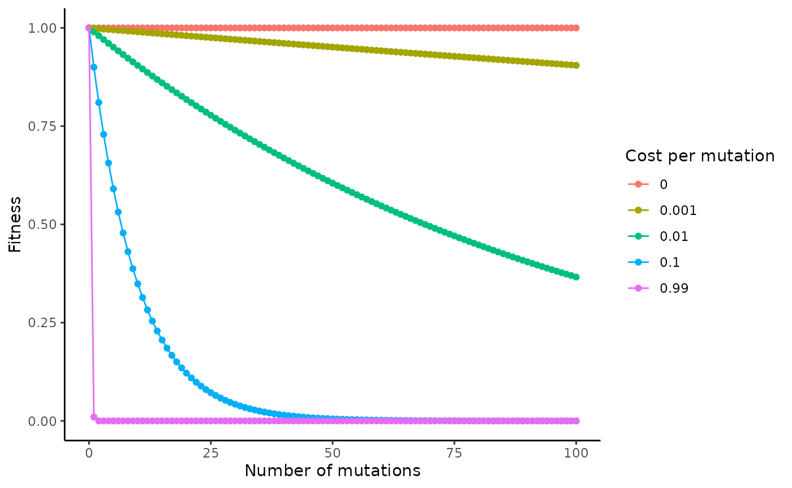
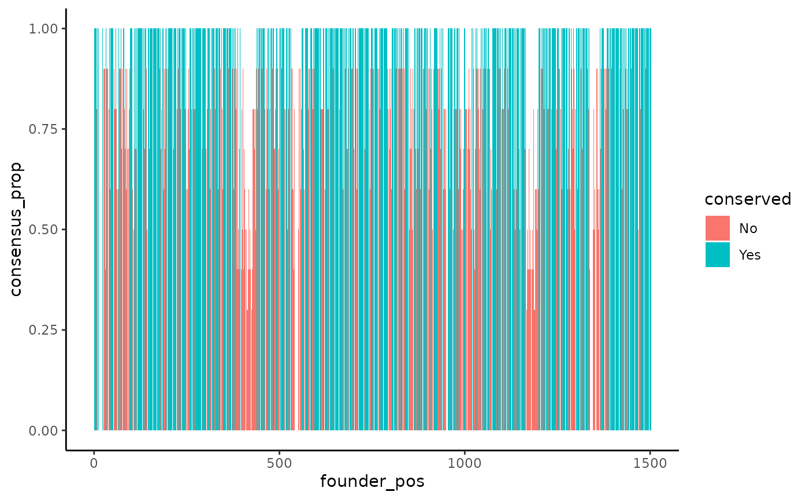
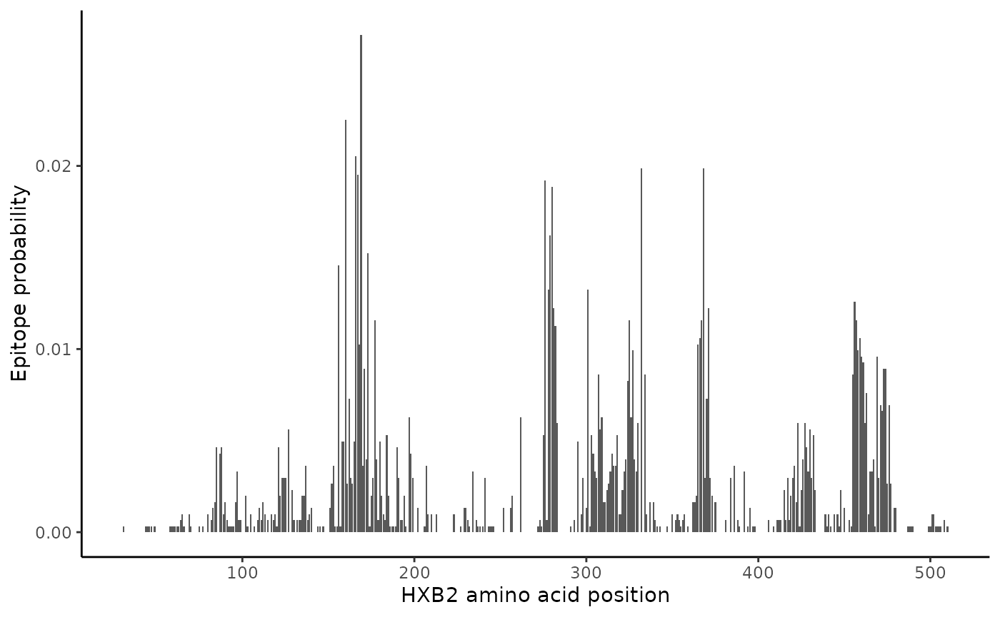
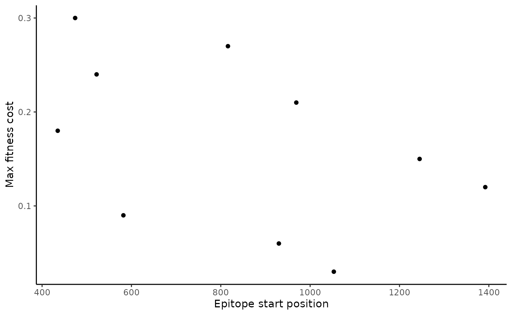
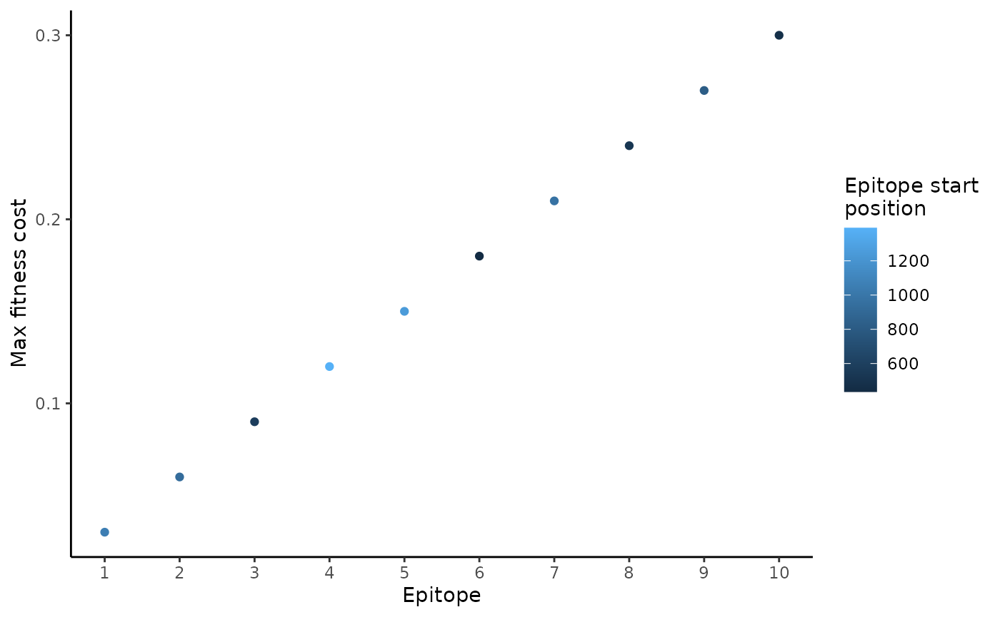

Prepare input data
prepare_input_data.Rmdwavess is a agent-based discrete-time within-host evolution simulator. We assume that all virus life cycles within the infection are synchronized into generations. Each generation is one full virus life cycle, from infecting one cell to exiting the cell and infecting the next one.
This vignette describes how to generate input data for running wavess using functions from the package, as summarized in the table below. Please note that you may also generate the input data on your own, which may be necessary if your inputs require more customization than these functions provide. However, we expect these functions to be sufficient for most users.
run_wavess() argument |
wavess function to generate input |
Description |
|---|---|---|
inf_pop_size |
define_growth_curve() |
Define active cell growth |
samp_scheme |
define_samp_scheme() |
Define sampling scheme |
founder_seqs |
extract_seqs() |
Extract founder sequence from an alignment |
q |
estimate_q() |
Determine nucleotide substitution probabilities |
prob_* |
rate_to_prob() |
Convert rate to probability |
conserved_sites |
identify_conserved_sites() |
Identify conserved sites |
ref_seq |
identify_conserved_sites(),
extract_seqs()
|
Get reference sequence that is considered to be the best replicator |
epitope_locations |
get_epitope_frequencies(),
sample_epitopes()
|
Sample epitopes |
Each of the sections below goes into more detail.
We also provide examples of how to save the data. This can be useful
if generating the input data takes a while to run or if, rather than
using the built-in run_wavess() function, you’d rather run
it using a python command line script (see
vignette("python") for details). We save the files to a
directory called input_data. If you would like to do the
same, you will have to create that directory before running the file
saving commands. For example:
dir.create("input_data")In each relevant section, we also provide examples of how to visualize the data.
Install and load wavess
First, you need to install (if needed) and load the
wavess library, as well as a few others, and we will set
the plotting theme and a seed:
# install.packages("remotes")
# remotes::install_github("MolEvolEpid/wavess")
# install.packages("ggplot2")
library(wavess)
library(readr)
library(tibble)
library(dplyr)
#>
#> Attaching package: 'dplyr'
#> The following objects are masked from 'package:stats':
#>
#> filter, lag
#> The following objects are masked from 'package:base':
#>
#> intersect, setdiff, setequal, union
library(tidyr)
library(ggplot2)
library(ape)
#>
#> Attaching package: 'ape'
#> The following object is masked from 'package:dplyr':
#>
#> where
theme_set(theme_classic())
# set seed
set.seed(1234)This will also load some example data that we will be using in this
vignette. All of this example data is related to the HIV gp120 protein.
Please note that the default parameters for run_wavess()
are also based on this example.
In particular, we include the following example data in the package:
-
hxb2_cons_founder: an alignment inape::DNAbinformat that includes the HIV full-genome sequence for the HXB2 reference sequence, the consensus sequence, and an example founder sequence. -
hiv_mut_rates: per-site per-day rates of change between specific nucleotides -
hiv_env_flt_2022: the first 10 sequences from the filtered HIV ENV alignment downloaded from the LANL HIV sequence database, inape::DNAbinformat. Feel free to download the entire alignment if you’d like. -
conserved_sites: a vector of conserved sites for the example founder sequence. More details on this below. -
env_features: a tibble of binding, contact, and and neutralization features for HIV ENV from the LANL HIV immunology database.
You can check out the documentation for these datasets for more details.
If you want to load your own data, you can use
ape::read.dna() or ape::read.FASTA() to load
alignment files and readr::read_delim() to load delimited
files.
Required run_wavess() inputs
The three required inputs to run_waves() are a data
frame of the infected cell population size for each generation,
a data frame including the days on which to sample and how many
sequences to sample (samp_scheme), and a vector of the
founder sequence(s) in character string format
(founder_seqs). In this section, we will introduce
functions that can help generate these inputs.
Note that, in general, some of the inputs are in units of generations and some are in units of days. We made these decisions mainly based on what information is most readily available in the literature related to each parameter value.
Define active cell growth
run_wavess() requires a inf_pop_size data
frame as input where each row is a generation with the following
columns:
-
generation: Each generation to be simulated (must be consecutive whole numbers starting with 0) -
active_cell_count: Number of active infected cells in each generation
You can create this data frame yourself, but we also provide a helper
function to generate it: define_growth_curve().
All of the arguments in this function have defaults, so you can run:
define_growth_curve()
#> # A tibble: 5,001 × 2
#> generation active_cell_count
#> <dbl> <dbl>
#> 1 0 10
#> 2 1 13
#> 3 2 17
#> 4 3 22
#> 5 4 29
#> 6 5 37
#> 7 6 48
#> 8 7 62
#> 9 8 80
#> 10 9 103
#> # ℹ 4,991 more rowsThis will generate an infected cell population size following a
logistic growth curve. By default, the starting population size
(n0) is 10, the carrying capacity (carry_cap)
is 2000, the maximum growth rate (max_growth_rate) is 0.3,
and the simulation is run for a maximum 5000 generations
(n_gen). All of these defaults can be changed by altering
the input parameters of the function.
Here is an example where we allow the simulation to run for longer (for as long as sequences are being sampled):
(inf_pop_size <- define_growth_curve(n_gen = 10000))
#> # A tibble: 10,001 × 2
#> generation active_cell_count
#> <dbl> <dbl>
#> 1 0 10
#> 2 1 13
#> 3 2 17
#> 4 3 22
#> 5 4 29
#> 6 5 37
#> 7 6 48
#> 8 7 62
#> 9 8 80
#> 10 9 103
#> # ℹ 9,991 more rowsIf you’d like to write this to a file:
write_csv(inf_pop_size, "input_data/inf_pop_size.csv")A couple notes:
- The number of founders must equal the initial population size.
- Note that if you start with multiple different founder sequences,
you may stochastically lose some of those sequences after generation
You can visualize the active cell dynamics over time using the following code:
# plot active cell counts
inf_pop_size |>
filter(generation <= 500) |>
ggplot(aes(x = generation, y = active_cell_count)) +
geom_line() +
labs(x = "Generation", y = "Number of infected active cells")
Define sampling scheme
run_wavess() requires a samp_scheme data
frame as input where each row is a day with the following
columns:
-
day: Each day on which to sample sequences -
n_sample_active: Number of sequences from active cells to sample for that day (note that in the simulation output, this number may be lower if the population size is smaller than the requested number of sequences to sample) -
n_sample_latent: Number of sequences from latent cells to sample for that day (note that in the simulation output, this number may be lower if the population size is smaller than the requested number of sequences to sample)
You can create this data frame yourself, but we also provide a helper
function to generate it: define_sampling_scheme().
All of the arguments in this function have defaults, so you can run:
define_sampling_scheme()
#> # A tibble: 11 × 3
#> day n_sample_active n_sample_latent
#> <int> <dbl> <dbl>
#> 1 0 20 20
#> 2 365 20 20
#> 3 730 20 20
#> 4 1095 20 20
#> 5 1460 20 20
#> 6 1825 20 20
#> 7 2190 20 20
#> 8 2555 20 20
#> 9 2920 20 20
#> 10 3285 20 20
#> 11 3650 20 20This will lead to sampling a maximum of 20 sequences
(max_samp) every 365 days (sampling_frequency)
for 3650 days (n_days).
Here is an example with sampling over a shorter time period, but more frequent sampling and fewer samples taken at each sampling event:
(samp_scheme <- define_sampling_scheme(
sampling_frequency_active = 30,
max_samp_active = 10,
n_days = 365
))
#> # A tibble: 14 × 3
#> day n_sample_active n_sample_latent
#> <int> <dbl> <dbl>
#> 1 0 10 20
#> 2 30 10 0
#> 3 60 10 0
#> 4 90 10 0
#> 5 120 10 0
#> 6 150 10 0
#> 7 180 10 0
#> 8 210 10 0
#> 9 240 10 0
#> 10 270 10 0
#> 11 300 10 0
#> 12 330 10 0
#> 13 360 10 0
#> 14 365 0 20Note that the simulation will automatically end after the last sampling time, even if the growth curve continues for more generations.
If you’d like to write this to a file:
write_csv(samp_scheme, "input_data/samp_scheme.csv")Extract founder sequence from an alignment
run_wavess() takes as input a character vector of
founder sequence(s) (founder_seqs). All sequences must be
the same length and not contain gaps.
We provide the function extract_seqs() to extract a
founder sequence from an alignment in ape::DNAbin format
and convert it into a character vector. The alignment can be read in
using ape::read.FASTA() or
ape::read.dna().
NOTE: We do not recommend using this function to extract more than one founder sequence to initiate a single simulation because if any gaps are present then the founder sequences will not be the same length, which will lead to an error. Rather, if you would like to simulate multiple founders, we recommend aligning all the founder sequences and then stripping gaps such that the alignment remains codon-aligned, especially if you plan to simulate immune fitness because epitopes are translated to amino acids to calculate immune fitness costs.
This alignment is of the entire HIV genome, but we’re only interested
in the ENV gp120 gene, which we can subset to using the
start and end arguments.
To do this, we first have to know what the start and end positions of gp120 are in the alignment. We know the start and end positions of gp120 in HXB2 from here (6225 and 7757). To get the start and end positions in our alignment, we can therefore find what alignment positions correspond to these HXB2 coordinates:
gp120_start <- which(cumsum(as.character(
hxb2_cons_founder["B.FR.83.HXB2_LAI_IIIB_BRU.K03455", ]
) != "-") == 6225)[1]
gp120_end <- which(cumsum(as.character(
hxb2_cons_founder["B.FR.83.HXB2_LAI_IIIB_BRU.K03455", ]
) != "-") == 7757)[1]Then we can use these start and end positions to extract gp120 for our founder sequence:
founder_seq <- extract_seqs(hxb2_cons_founder, "B.US.2011.DEMB11US006.KC473833",
start = gp120_start, end = gp120_end
)$founderThis function can also take a reference sequence name
(ref_name), which can be used as the input to the
ref_seq argument in run_wavess(). More on this
later.
The easiest way to save this sequence as a fasta file is to convert
it into an ape::DNAbin object and then save it:
Estimate Q matrix
The model requires as input a Q matrix (q), which
defines the rates of nucleotide substitution for each possible
transition between nucleotides. By default, this matrix is estimated
from approximately neutral sites:
(hiv_q_mat <- calc_q_from_rates(hiv_mut_rates, mut_rate = 2.4e-5, generation_time = 1.2))
#> A C G T
#> A -1.3935602 0.1650215 1.1002145 0.1283242
#> C 0.9167813 -3.2089352 0.0915972 2.2005567
#> G 2.9338881 0.0182889 -3.3189236 0.3667466
#> T 0.5499598 1.8338005 0.5501132 -2.9338736This matrix is based on the rates from Zanini et al. 2017, and is converted to an approximate Q matrix by dividing by the estimated overall nucleotide substitution rate.
If you are simulating an organism other than HIV, you will
want to provide a Q matrix estimated for that organism. Any
phylogenetic tree building program will estimate a Q matrix. For
instance, the Q matrix is returned when estimating a tree using IQ-TREE (in the .iqtree output file).
We also provide the function estimate_q() to estimate Q
from a multiple sequence alignment (in ape::DNAbin format)
directly in R. Ideally, the input for this function would be an
alignment of sequences from within-host evolution of a representative
person. However, we have found that the simulation output is relatively
robust to variations in the Q matrix, so if you don’t have a within-host
alignment, then you can input an alignment with somewhat closely related
sequences (e.g. from the same subtype). The function outputs a Q matrix
where the rows are the “from” nucleotide and the columns are the “to”
nucleotide.
Here is an example (but note that this matrix isn’t accurate because it’s simply a random set of sequences):
estimate_q(hiv_env_flt_2022)
#> optimize edge weights: -13347 --> -13272.97
#> optimize rate matrix: -13272.97 --> -12963.97
#> optimize invariant sites: -12963.97 --> -12460.48
#> optimize free rate parameters: -12460.48 --> -10603
#> optimize edge weights: -10603 --> -10590.63
#> optimize rate matrix: -10590.63 --> -10581.46
#> optimize invariant sites: -10581.46 --> -10581.46
#> optimize free rate parameters: -10581.46 --> -10577.81
#> optimize edge weights: -10577.81 --> -10577.48
#> optimize rate matrix: -10577.48 --> -10577.26
#> optimize invariant sites: -10577.26 --> -10577.26
#> optimize free rate parameters: -10577.26 --> -10575.89
#> optimize edge weights: -10575.89 --> -10575.83
#> optimize rate matrix: -10575.83 --> -10575.79
#> optimize invariant sites: -10575.79 --> -10575.79
#> optimize free rate parameters: -10575.79 --> -10575.18
#> optimize edge weights: -10575.18 --> -10575.16
#> optimize rate matrix: -10575.16 --> -10575.14
#> optimize invariant sites: -10575.14 --> -10575.14
#> optimize free rate parameters: -10575.14 --> -10574.92
#> optimize edge weights: -10574.92 --> -10574.91
#> optimize rate matrix: -10574.91 --> -10574.91
#> optimize invariant sites: -10574.91 --> -10574.91
#> optimize free rate parameters: -10574.91 --> -10574.84
#> optimize edge weights: -10574.84 --> -10574.84
#> optimize rate matrix: -10574.84 --> -10574.83
#> optimize invariant sites: -10574.83 --> -10574.83
#> optimize free rate parameters: -10574.83 --> -10574.82
#> optimize edge weights: -10574.82 --> -10574.81
#> optimize rate matrix: -10574.81 --> -10574.81
#> optimize invariant sites: -10574.81 --> -10574.81
#> optimize free rate parameters: -10574.81 --> -10574.81
#> optimize edge weights: -10574.81 --> -10574.81
#> optimize rate matrix: -10574.81 --> -10574.81
#> optimize invariant sites: -10574.81 --> -10574.81
#> optimize free rate parameters: -10574.81 --> -10574.8
#> optimize edge weights: -10574.8 --> -10574.8
#> optimize rate matrix: -10574.8 --> -10574.8
#> optimize invariant sites: -10574.8 --> -10574.8
#> optimize free rate parameters: -10574.8 --> -10574.8
#> optimize edge weights: -10574.8 --> -10574.8
#> optimize rate matrix: -10574.8 --> -10574.8
#> optimize invariant sites: -10574.8 --> -10574.8
#> optimize free rate parameters: -10574.8 --> -10574.8
#> optimize edge weights: -10574.8 --> -10574.8
#> A C G T
#> A -1.5940889 0.3894774 1.0395679 0.1650437
#> C 0.7692561 -2.0446348 0.1948555 1.0805232
#> G 1.5490726 0.1470087 -1.9302494 0.2341682
#> T 0.2459336 0.8152003 0.2341682 -1.2953020By default, a neighbor joining tree is created using
ape::bionj(ape::dist.dna(aln, model = 'TN93')). Instead,
you can provide an input tree (tr). From this, the Q matrix
is computed with phangorn::pml_bb() using by default a
GTR+I+R4 model of nucleotide substitution (model) and no
tree rearrangement (rearrangement).
To save this to a file:
data.frame(hiv_q_mat) |>
rownames_to_column(var = "nt_from") |>
write_csv("input_data/hiv_q_mat.csv")Note: to read this back into R and get it into matrix form, you can use this code:
Latent cell dynamics
The required inputs related to latency are per-day rates that these events happen to a cell. (Note that to “turn off” any of these, all you have to do is set the rate equal to 0.) It is helpful to visualize the latent cell dynamics prior to simulating data with a given set of rates. While the way the model implements latency is stochastic, meaning that a different number of cells will become latent in each simulation, the overall trends should be similar across simulations, given the same set of rates.
To make these plots, you need the active cell counts, which can be
generated from the define_growth_curve() function described
above. We will therefore be using the inf_pop_size dataset
we created earlier in the vignette. Also, the rates related to latency
are converted to probabilities for simulation, so we will convert them
here before plotting.
Please note that we assume the rates (and thus per-generation probabilities) are small for all latency parameters, such that it is unlikely that multiple events (activate, die, proliferate) will occur to a single latent cell in a single [active cell] generation. If multiple events occur to a single latent cell, then the first event in this ordered list will be chosen as the event that occurred to the cell in that generation: cell becomes active, cell dies, cell proliferates.
# set parameters to get latent curve
to_latent <- 0.001
to_active <- 0.01
proliferation <- 0.01
death <- 0.01
# get latent cell count for each generation
latent <- 0
active_latent_counts <- lapply(inf_pop_size$active_cell_count, function(x) {
n_to_latent <- rbinom(1, x, prob = to_latent)
to_active <- rbinom(latent, 1, prob = to_active)
to_proliferate <- rbinom(latent, 1, prob = proliferation)
to_die <- rbinom(latent, 1, prob = death)
n_to_active <- sum(to_active == 1)
n_to_die <- sum((to_die - to_active) == 1)
n_to_proliferate <- sum((to_proliferate - to_die - to_active) == 1)
counts <- tibble(
Active = x, Latent = latent, n_to_latent, n_to_active,
n_to_proliferate, n_to_die
)
latent <<- latent + n_to_latent - n_to_active + n_to_proliferate - n_to_die
return(counts)
}) |>
bind_rows() |>
mutate(gen = row_number())
# Plot (latent) cell counts
active_latent_counts |>
filter(gen <= 300) %>%
pivot_longer(c(Active, Latent)) |>
ggplot(aes(x = gen, y = value, col = name)) +
geom_line() +
# scale_y_log10() + # uncomment this if you want to scale the y axis by log10
scale_color_manual(values = c("black", "red")) +
labs(x = "Generation", y = "Number of infected cells", col = "Type of cell")
Selection
wavess can simulate three types of selection: conserved
sites, replicative fitness relative to a reference sequence, and B-cell
immune selection at user-defined epitopes. By default, no selection is
included in the simulations. However, we recommend including selection
to obtain realistic model outputs.
Below, we describe how to generate the inputs for each of these selective pressures.
Fitness costs
Each of the different forms of selection has a fitness cost associated with it. The fitness cost can be in the range [0,1), where 0 indicates no cost. 1, which indicates no ability to survive, is not allowed as we assume that we are only simulating scenarios where infection is established and the viruses are at least somewhat viable. However, using a very high fitness cost, e.g. of 0.99, effectively simulates purifying selection due to the compounding nature of the fitness cost over many generations.
The fitness, F, of a virus is defined by the product of the fitness of each component:
where is the conserved fitness, is the replicative fitness, and is the immune fitness.
The equation used to compute and is:
Where is either the conserved fitness cost or the replicative fitness cost, and is the number of mutations at conserved sites or the number of sites that differ from the reference sequence, respectively.
When both forms of fitness are used, if the position is considered to be a conserved site, then it is not considered for replicative fitness.
Here is a plot of how the cost and number of mutations influences overall fitness:
costs <- c(0, 0.001, 0.01, 0.1, 0.99)
n_muts <- 0:100
tibble(n_mut = sort(rep(n_muts, length(costs))), cost = rep(costs, length(n_muts))) %>%
mutate(fitness = (1 - cost)**n_mut) %>%
ggplot(aes(x = n_mut, y = fitness, col = factor(cost))) +
geom_line() +
geom_point() +
labs(x = "Number of mutations", y = "Fitness", col = "Cost per mutation")
The calculation of immune fitness is a bit more involved, but the result is that it is computed as the largest fitness cost across all immune-recognized epitopes:
Where is a vector of the costs of each epitope recognized by the immune system. Note that this cost changes over generations. Please refer to the manuscript for more details.
In the next sections, we will discuss how to identify conserved sites, create a reference sequence, and generate epitopes.
An important note about indexing and reference sequences
First, all nucleotide positions must be indexed relative to the start
of the founder sequence in the simulation. Since the back-end is
implemented in Python, we expect the indexing to begin at 0. This is
because you can run wavess using the run_wavess() function
in R, but also directly from Python (see vignette("python")
for details). This way, the inputs are the same regardless of what
program you use to run wavess. This is relevant for conserved sites and
epitopes.
Second, information of interest such as conserved sites or antibody
contacts, is often computed or provided relative to what is called a
reference sequence. For HIV, the reference sequence is usually HXB2.
This community reference sequence is different than how we
define a reference sequence in wavess. The
community reference sequence (e.g. HXB2) is a standard that researchers
use to more easily be able to share and compare information. The
reference sequence defined in wavess is one that is
believed to be representative of the “most fit” sequence (when not under
immune pressure), however you would like to think of it.
When information of interest is provided relative to the community reference sequence, we must change the indexing of the information to be relative to the founder sequence that will be used in the simulation.
The easiest way to ensure that the indexing is correct is to have an alignment consisting of the founder sequence, the community reference sequence (if needed), and the wavess reference sequence (if being used), where the start and end of the alignment are the start and end of the founder sequence to be used in the simulation.
If you have an alignment with sequences that are longer than the
input sequence you want to simulate, you can use the
slice_aln() function to slice out the desired section of
the alignment. Here’s an example:
(gp120 <- slice_aln(hxb2_cons_founder, gp120_start, gp120_end))
#> 3 DNA sequences in binary format stored in a matrix.
#>
#> All sequences of same length: 1563
#>
#> Labels:
#> B.FR.83.HXB2_LAI_IIIB_BRU.K03455
#> CON_B(1295)
#> B.US.2011.DEMB11US006.KC473833
#>
#> Base composition:
#> a c g t
#> 0.381 0.160 0.214 0.245
#> (Total: 4.69 kb)We will use this alignment below.
Identify conserved sites
In run_wavess() you can provide a vector of conserved
sites and the conserved nuceltoide (conserved_sites
argument). Mutations away from a conserved nucleotide have a fitness
cost defined by the conserved_cost argument.
To generate a vector of conserved sites from an alignment, you can
use the function identify_conserved_sites(), which outputs
a data frame with 5 columns:
-
founder_pos: the position in the founder -
founder_base: the base in the founder sequence -
consensus_base: the consensus base -
consensus_prop: the proportion of sequences that have the consensus base -
conserved: whether (‘Yes’) or not (‘No’) the site is considered conserved, based on the threshold value defined by thethreshargument (default: 0.99)
You can use this function in two ways. If you have an alignment that
includes the founder sequence of interest, all you need to provide is
the alignment in ape::DNAbin format and the name of the
founder sequence in the alignment. Note that the function assumes that
the alignment consists of only the segment of the founder sequence that
you want to simulate (i.e., the beginning of the alignment is the
beginning of the founder sequence that you want to simulate, and the end
of the alignment is the end of the sequence you want to simulate).
We will be using the built-in hiv_env_flt_2022 alignment
as an example. However, this contains only 10 sequences. In
reality, you should use many more sequences. For HIV, you can
download the entire filtered alignment for each gene or for the entire
genome from the LANL
HIV sequence database.
For the example founder gp120 sequence we use in the package
(B.US.2011.DEMB11US006.KC473833), we also provide a vector of conserved
sites for this founder sequence (founder_conserved_sites)
for ease of use.
First, since the hxb2_cons_founder sequence is all of
env, but we just want to simulate gp120, we have to slice out
that part of the alignment:
# get hxb2 gp120 length and end position in flt alignment
len_hxb2_gp120 <- nchar(extract_seqs(hxb2_cons_founder,
"B.FR.83.HXB2_LAI_IIIB_BRU.K03455",
start = gp120_start, end = gp120_end
)$founder)
flt_gp120_end <- which(cumsum(as.character(hiv_env_flt_2022[1, ]) != "-") ==
len_hxb2_gp120)[1]
# subset to only gp120 section
hiv_gp120_flt_2022 <- slice_aln(hiv_env_flt_2022, 1, flt_gp120_end)Then we can use this sliced alignment to identify conserved sites:
identify_conserved_sites(hiv_gp120_flt_2022, "B.FR.83.HXB2_LAI_IIIB_BRU.K03455")
#> # A tibble: 1,533 × 5
#> founder_pos founder_base consensus_base consensus_prop conserved
#> <dbl> <chr> <chr> <dbl> <chr>
#> 1 0 a a 1 Yes
#> 2 1 t t 1 Yes
#> 3 2 g g 1 Yes
#> 4 3 a a 1 Yes
#> 5 4 g g 1 Yes
#> 6 5 a a 1 Yes
#> 7 6 g g 1 Yes
#> 8 7 t t 0.8 No
#> 9 8 g g 1 Yes
#> 10 9 a a 1 Yes
#> # ℹ 1,523 more rowsAlternatively, if you have two alignments with a shared reference, one from which you’d like to calculate conserved sites, and the other that contains the founder, you can provide both alignments, as well as the common reference, and the function will return the conserved sites relative to the founder sequence. In this case, the shared reference sequence is assumed to have the same start position in each alignment.
(founder_conserved_df <- identify_conserved_sites(hiv_gp120_flt_2022,
founder = "B.US.2011.DEMB11US006.KC473833",
ref = "B.FR.83.HXB2_LAI_IIIB_BRU.K03455",
founder_aln = gp120
))
#> # A tibble: 1,503 × 5
#> founder_pos founder_base consensus_base consensus_prop conserved
#> <dbl> <chr> <chr> <dbl> <chr>
#> 1 0 a a 1 Yes
#> 2 1 t t 1 Yes
#> 3 2 g g 1 Yes
#> 4 3 a a 1 Yes
#> 5 4 g g 1 Yes
#> 6 5 a a 1 Yes
#> 7 6 g g 1 Yes
#> 8 7 c t 0.8 No
#> 9 8 g g 1 Yes
#> 10 9 a a 1 Yes
#> # ℹ 1,493 more rowsYou can visualize the conserved sites across the genome using the following code:
founder_conserved_df |>
ggplot(aes(x = founder_pos, y = consensus_prop, fill = conserved)) +
geom_col()
#> Warning: Removed 30 rows containing missing values or values outside the scale range
#> (`geom_col()`).
The blue sites are conserved, the red sites are not conserved, and the y-axis indicates the proportion of sequences in the alignment that contain the consensus base. Note that this example only uses 10 sequences. We recommend using a large alignment with very diverse sequences to identify conserved sites to ensure that the identified sites are across many genetic backgrounds.
While we provide information about each sequence in the output, the
input of run_wavess only takes a vector of the conserved
sites. To generate this, you can run the following code:
founder_conserved_sites_example <- founder_conserved_df |>
filter(conserved == "Yes") |>
select(founder_pos, founder_base) |>
deframe() |>
toupper()
head(founder_conserved_sites_example)
#> 0 1 2 3 4 5
#> "A" "T" "G" "A" "G" "A"
tail(founder_conserved_sites_example)
#> 1497 1498 1499 1500 1501 1502
#> "A" "A" "A" "A" "G" "A"To write this to a file (note that we use the internal conserved sites because it is more accurate for our example, rather than the example run above, which is not accurate since it was only run on a handful of genomes):
Find a consensus sequence
We have implemented a very crude way of generating a consensus
sequence, by taking the most common base at each position, and if there
is a tie, the base that comes first in the alphabet. The consensus
sequence is returned as part of the
identify_conserved_sites() output. If you would like more
control over generating a consensus sequence, you can use the Consensus
Maker tool on the LANL HIV website.
To convert the consensus sequence from above into the correct input
format for run_wavess(), you can use the following code,
where NA values are converted to gaps:
gsub("NA", "-", paste0(founder_conserved_df$consensus_base, collapse = ""))
#> [1] "atgagagtgatgg---------ggacacagatg---aagtggagatgggggactatgatcttgggaatgataataatttgtagtgctacagaaaacttgtgggttactgtctactatggggtacctgtgtggaaagatgcagagaccaccctattttgtgcatcagatgctaaagcatatgatacagaagtgcataatgtctgggctacacatgcctgtgtacccacagaccccaacccacaagaaataaatttggaaaatgtgacagaagagtttaacatgtggaaaaataacatggtagaacagatgcataaagatataatcagtctatgggaccaaagcctaaagccatgtgtaaagttaacccctctctgtgttactttaaagtgcaatgactacaacaacaaca--aa---cactactacaactgaggaaggagaaataaaaaactgctctttcaatatgaccacagaattaagagataagaaacagaaagtatattcacttttttatagacttgatatagtacaaattgataataa---------t------aagtatagattaataaattgtaatacctcagccattacacaggcttgtccaaaggtatcctttgagccaattcccatacattattgtgccccagctggttttgcgattctaaagtgtaatgataaggagttcaatggaacaggaccatgcaagaatgtcagcacagtacaatgcacacatggaatcaagccagtagtatcaactcaactgctgttaaatggcagtctagcagaagaagagataatgattagatctgaaaatatcacagacaatgccaaaaccataatagtacaacttaataagcctgtaaaaattaattgtaccagacctaacaacaatacaagaaaaagtatacat--aggaccaggacaagcattctatgcaacaggtga---cataggggatataagaaaagcacattgtaatgtcagtagaacagaatggaataaaactttacaaaaggtagccaaacaattaagaaaacactttaacaaaacaataatcttt---aataattcaggaggggatttagaaattacaacacatagttttaattgtggaggagaatttttctactgcaacacatcaggcctgtttaatagcacttggaataaaaacaataacacaaaaaaaaataaaactataactctcccatgcagaataaagcaaattataaatatgtggcagagagcaggacaagcaatatatgcccctcccatccaaggagtaataaggtgtgaatcaaacattacaggactactattaacaagagatggtggaaa------taataaa------aataccgaaaccttcagacctggaggaggagatatgagggacaattggagaagtgaattatataaatataaagtagtaaaaattgaaccactaggagtagcacccaccaaggcaaaaagaagagtggtggagagagaaaaaaga"If you have an alignment including the founder sequence and wavess
reference sequence you’d like to use, then you can also use the
extract_seqs() function to obtain both at once:
(founder_ref <- extract_seqs(hxb2_cons_founder,
founder = "B.US.2011.DEMB11US006.KC473833",
ref = "CON_B(1295)",
start = gp120_start, end = gp120_end
))
#> $founder
#> [1] "ATGAGAGCGATGGGGATCATGAGGAATTGGCAACACTTGTGGAGATGGGGCATGATGCTCCTTGGGATGTTGATGATCTGTAATGCTACAGACAACTTGTGGGTCACAGTCTATTATGGGGTACCTGTGTGGAGGGAAGCAAACACAACTCTATTTTGTGCATCAGATGCTAAAGCATATGAGACAGAGGTACATAATGTTTGGGCCACACATGCCTGTGTACCCACAGACCCCAACCCACAAGAAGTAAAATTGGGAAATGTGACAGAAAATTTTAATGCATGGAAAAATGACATGGTAGAACAGATGCATGAGGATATAATCAGTCTATGGGATCAAAGCCTAAAGCCATGTGTAAGATTAACCCCACTCTGTGTTACTCTAAATTGCACTGATCTTAATGCCACTAGCATTGGTAGTAACATGACACTGAAGGGAGAAATAAAAAATTGCACTTTCAATATCACCACAAGTAAAAACGATAAAAAGACAACAGAACGTGCATATTTTAATAGACTTGATGTGGTACCAATGGATGATAATAGTAGTAGTAGTACTAGTTATAGGTTGATAAGTTGTAACACCTCAGTCATTACACATGCCTGCCCAAAGGTATCCTTTGAGCCAATTCCCATACATTATTGTGCCCCAGCTGGTTTTGCGATTCTAAAGTGTAATGATAAAAAATTTAATGGAAAAGGACTATGTAAAAATGTCAGCACAGTACAATGTACACATGGAATTAGACCAGTAGTATCAACTCAACTGTTGCTGAATGGCAGTCTAGCAGAAGAAGAAGTAGTAATTAGATCTGAAAATATCTCTAACAATGCCAAAACCATAATAGTACATCTGAAGGAATCTGTACAAATTATTTGTGTAAGACCCAACAACAATACAAGACAAGGTATACATATGGGACCAGGAAGGACATTTTATACAACAGGGGGGATAATAGGAGATATAAGGCAAGCATATTGTAACATTAGTAGGGCAGAATGGACTAACACTCTAGGAAAGATAGTTGGAAAATTAAGAGAACGATTTAATAAAACAATAATCTTTAATCATTCCTCAGGAGGGGACCTAGAAATTGTGACACACAGTTTTAATTGTGGAGGGGAATTTTTCTACTGCAATACATCAGCACTGTTTAATAGTACTTGGAATAGTACTATAAATACAAGTGAAAATGACACAATCATACTCCCATGCAGAATAAAACAAATTATAAATCTGTGGCAGGAAGTAGGAAGAGCAATGTATGCTCCTCCCATCAGGGGAAACATTAGCTGTACATCAAATATTACGGGGGTGCTATTAACAAGAGATGGTGGCGATGACCCTAACGGGACCAACGACACCGAGACCTTCAGACCTGGAGGAGGAGATATGAGGGACAATTGGAGAAATGAATTGTATAAATACAAAGTAGTAAAAATTGAACCATTGGGAATAGCACCCACCAGGGCAAAGAGAAGAGTGGTGCAAAGAGAAAAAAGA"
#>
#> $ref
#> [1] "ATGAGAGTGAAGGGGATCAGGAAGAATTATCAGCACTTGTGGAGATGGGGCATCATGCTCCTTGGGATGTTGATGATCTGTAGTGCTGCAGAAAAATTGTGGGTCACAGTCTATTATGGGGTACCTGTGTGGAAAGAAGCAACCACCACTCTATTTTGTGCATCAGATGCTAAAGCATATGATACAGAGGTACATAATGTTTGGGCCACACATGCCTGTGTACCCACAGACCCCAACCCACAAGAAGTAGTATTGGAAAATGTGACAGAAAATTTTAACATGTGGAAAAATAACATGGTAGAACAGATGCATGAGGATATAATCAGTTTATGGGATCAAAGCCTAAAGCCATGTGTAAAATTAACCCCACTCTGTGTTACTTTAAATTGCACTGATTTTAATACTAATAATAATAATACTAATA-TA-TATGAAAGGAGAAATAAAAAACTGCTCTTTCAATATCACCACAAGCATAAGAGATAAGATGCAGAAAGAATATGCACTTTTTTATAAACTTGATGTAGTACCAATAGATAATGA---------TAATACTAGCTATAGGTTGATAAGTTGTAACACCTCAGTCATTACACAGGCCTGTCCAAAGGTATCCTTTGAGCCAATTCCCATACATTATTGTGCCCCGGCTGGTTTTGCGATTCTAAAGTGTAATGATAAGAAGTTCAATGGAACAGGACCATGTAAAAATGTCAGCACAGTACAATGTACACATGGAATTAGGCCAGTAGTATCAACTCAACTGCTGTTAAATGGCAGTCTAGCAGAAGAAGAGGTAGTAATTAGATCTGAAAATTTCACAGACAATGCTAAAACCATAATAGTACAGCTGAATGAATCTGTAGAAATTAATTGTACAAGACCCAACAACAATACAAGAAAAAGTATACATATAGGACCAGGGAGAGCATTTTATGCAACAGGAGAAATAATAGGAGATATAAGACAAGCACATTGTAACATTAGTAGAGCAAAATGGAATAACACTTTAAAACAGATAGTTAAAAAATTAAGAGAACAATTTAATAAAACAATAGTCTTTAATCAATCCTCAGGAGGGGACCCAGAAATTGTAATGCACAGTTTTAATTGTGGAGGGGAATTTTTCTACTGTAATACAACACAACTGTTTAATAGTACTTGGAATAATAATAATA-TACTAAAAAAAATGAAACTATCACACTCCCATGCAGAATAAAACAAATTATAAACATGTGGCAGGAAGTAGGAAAAGCAATGTATGCCCCTCCCATCAGAGGACAAATTAGATGTTCATCAAATATTACAGGGCTGCTATTAACAAGAGATGGTGGTAA------TAATAATA--AACAACACTGAGACCTTCAGACCTGGAGGAGGAGATATGAGGGACAATTGGAGAAGTGAATTATATAAATATAAAGTAGTAAAAATTGAACCATTAGGAGTAGCACCCACCAAGGCAAAGAGAAGAGTGGTGCAGAGAGAAAAAAGA"It’s okay if the reference sequence has gaps. These will be ignored when computing fitness relative to the reference.
To write this to a fasta file, you use a similar method as writing the founder to a fasta file:
strsplit(founder_ref$ref, "")[[1]] |>
as.DNAbin() |>
as.matrix() |>
write.FASTA("input_data/ref.fasta")Sample epitopes
Immune fitness in wavess is defined by epitope locations
in the sequence, each of which can have a maximum fitness cost between 0
and 1. These are defined at the amino acid level, so they must both be
within a nucleotide sequence that is translated to a protein and in the
correct reading frame. Note that, currently, epitope locations must all
be the same length.
While you can define your own epitope locations, we provide the
function sample_epitopes() that, given epitope
probabilities for each amino acid position of interest, will
return randomly sampled nucleoitde epitope locations based on
the probability of an epitope occurring at that location. Therefore, the
function sample_epitopes() takes as input a data frame that
must contain columns for the amino acid position
(aa_position) and the epitope probability at that position
(epitope_probability). The amino acid positions must only
include those corresponding to the nucleotide sequence to be simulated,
and must be indexed in such a way that the first amino acid position
corresponds to the first nucleotide position in the founder sequence. In
our example, this is gp120. We have already filtered the built-in
package data to only include this subset.
If possible, we recommend determining epitope probabilities based on some sort of known antibody contact/binding/neutralization maps. For HIV ENV gp120, we used the features from the LANL HIV immunology database:
env_features
#> # A tibble: 3,022 × 13
#> ID Title Reference `Feature type` `Mab(s)(Binding type)`
#> <dbl> <chr> <chr> <chr> <chr>
#> 1 4 PGT121 epitope defined… Mouquet2… binding PGT121(V3)
#> 2 4 PGT121 epitope defined… Mouquet2… binding PGT121(V3)
#> 3 4 PGT121 epitope defined… Mouquet2… binding PGT121(V3)
#> 4 4 PGT121 epitope defined… Mouquet2… binding PGT121(V3)
#> 5 4 PGT121 epitope defined… Mouquet2… binding PGT121(V3)
#> 6 4 PGT121 epitope defined… Mouquet2… binding PGT121(V3)
#> 7 4 PGT121 epitope defined… Mouquet2… binding PGT121(V3)
#> 8 4 PGT121 epitope defined… Mouquet2… binding PGT121(V3)
#> 9 4 PGT121 epitope defined… Mouquet2… binding PGT121(V3)
#> 10 4 PGT121 epitope defined… Mouquet2… binding PGT121(V3)
#> # ℹ 3,012 more rows
#> # ℹ 8 more variables: `Experimental method(s)` <chr>, Position <dbl>,
#> # `Env feature(s)` <chr>, `HXB2 AA` <chr>, `Entropy M` <dbl>,
#> # `Entropy B` <dbl>, `Entropy C` <dbl>, Annotation <chr>All we need is the positions column, but we provide the rest of the information for reference.
If you don’t have this information, you can use uniformly distributed probabilities, or some other informed guess as to where the probabilities for epitopes binding is higher.
We can put the positions into the
get_epitope_frequencies() function, which returns a tibble
with three columns:
-
aa_pos: amino acid position -
n_features: the number of features at that position -
epitope_probability: the probability of an epitope at that position, given the input positions
(epi_probs <- get_epitope_frequencies(env_features$Position))
#> # A tibble: 480 × 3
#> aa_position n_features epitope_probability
#> <dbl> <dbl> <dbl>
#> 1 31 1 0.000331
#> 2 32 0 0
#> 3 33 0 0
#> 4 34 0 0
#> 5 35 0 0
#> 6 36 0 0
#> 7 37 0 0
#> 8 38 0 0
#> 9 39 0 0
#> 10 40 0 0
#> # ℹ 470 more rowsWe can visualize it as follows:
epi_probs %>%
ggplot(aes(x = aa_position, y = epitope_probability)) +
geom_col() +
labs(x = "HXB2 amino acid position", y = "Epitope probability")
This information can be used as input to the
sample_epitopes() function. Note that the output of this
function is different each time it’s run, since the locations are
selected randomly each time.
sample_epitopes(epi_probs)
#> 2 resamples required
#> # A tibble: 10 × 3
#> epi_start_nt epi_end_nt max_fitness_cost
#> <dbl> <dbl> <dbl>
#> 1 483 513 0.03
#> 2 906 936 0.06
#> 3 981 1011 0.09
#> 4 822 852 0.12
#> 5 1083 1113 0.15
#> 6 1488 1518 0.18
#> 7 525 555 0.21
#> 8 405 435 0.24
#> 9 441 471 0.27
#> 10 1368 1398 0.3The function returns start and end nucleotide positions for each epitope, relative to the input amino acid positions.
There are many ways to customize the output of this function. You can
provide the starting (start_aa_pos) and ending
(end_aa_pos) amino acid positions to consider for epitope
sampling (here we’ve pre-subset to only gp120 features), the number of
epitopes to sample (num_epitopes), the amino acid epitope
length (aa_epitope_length), and the maximum fitness cost of
an epitope (max_fit_cost).
If the amino acid positions are relative to a community reference
sequence, then you will also need to create a map between the community
reference and your founder sequence so that the data can be re-indexed
to the founder sequence. In this case, the amino acid positions we used
are from HXB2, so we want to map them to our founder sequence. You
should use an alignment that contains the exact founder sequence you
plan to simulate (no longer and no shorter). Once you have this
alignment (e.g. using the slice_aln() function described
above), you can use the map_ref_founder() function, which
returns reference and founder positions mapped to each other:
(ref_founder_map <- map_ref_founder(gp120,
ref = "B.FR.83.HXB2_LAI_IIIB_BRU.K03455",
founder = "B.US.2011.DEMB11US006.KC473833"
))
#> # A tibble: 1,563 × 5
#> alignment_pos ref_pos founder_pos ref_base founder_base
#> <dbl> <dbl> <dbl> <chr> <chr>
#> 1 0 0 0 a a
#> 2 1 1 1 t t
#> 3 2 2 2 g g
#> 4 3 3 3 a a
#> 5 4 4 4 g g
#> 6 5 5 5 a a
#> 7 6 6 6 g g
#> 8 7 7 7 t c
#> 9 8 8 8 g g
#> 10 9 9 9 a a
#> # ℹ 1,553 more rowsYou can input this into sample_epitopes(), which will
then return nucleotide positions relative to the founder sequence
(instead of HXB2):
(epitope_locations <- sample_epitopes(epi_probs,
ref_founder_map = ref_founder_map
))
#> 4 resamples required
#> # A tibble: 10 × 3
#> epi_start_nt epi_end_nt max_fitness_cost
#> <dbl> <dbl> <dbl>
#> 1 1053 1083 0.03
#> 2 930 960 0.06
#> 3 582 612 0.09
#> 4 1392 1422 0.12
#> 5 1245 1275 0.15
#> 6 435 465 0.18
#> 7 969 999 0.21
#> 8 522 552 0.24
#> 9 816 846 0.27
#> 10 474 504 0.3Here are two ways to visualize the epitopes:
epitope_locations |>
ggplot(aes(x = epi_start_nt, y = max_fitness_cost)) +
geom_point() +
labs(x = "Epitope start position", y = "Max fitness cost")
epitope_locations %>%
ggplot(aes(x = seq_len(nrow(.)), y = max_fitness_cost, col = epi_start_nt)) +
geom_point() +
scale_x_continuous(breaks = 1:10) +
labs(x = "Epitope", y = "Max fitness cost", col = "Epitope start\nposition")
To write them to a file:
write_csv(epitope_locations, "input_data/epitope_locations.csv")On to simulations
Next, check out vignette("run_wavess") to see how to use
all these inputs to simulate within-host evolution.